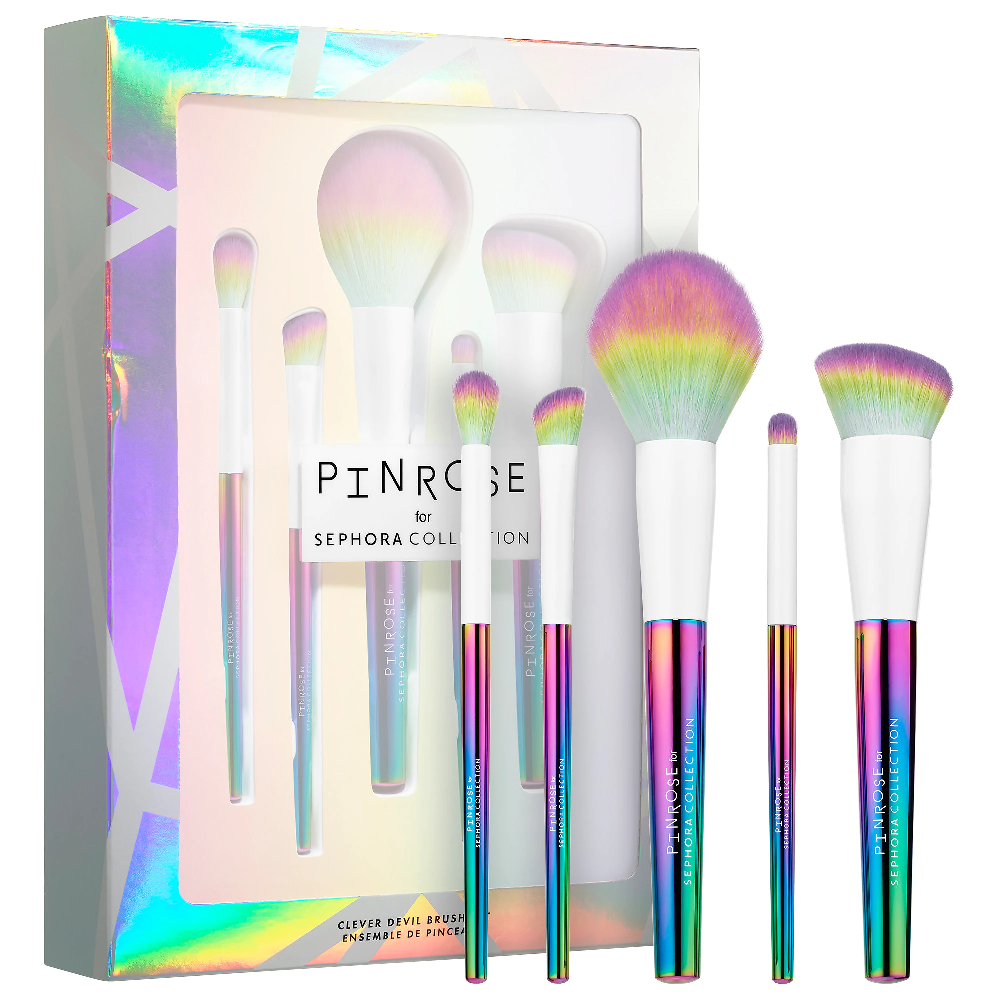

Perfume Ferrari Black é um perfume Ferrari masculino amadeirado e cítrico. O mais famoso da linha Scuderia Ferrari, sua fragrância é esportiva e sofisticada, como os carros da marca.
O perfume Ferrari Black é perfeito para o homem que gosta de curtir os melhores momentos da vida, sem perder aquele toque de privacidade.

Itens Favoritos
Desde 2014, as mentes criativas por trás da Pinrose criaram fragrâncias personalizadas, lúdicas e alegres para a moderna geração do milênio.
Pinrose baseia-se na ciência do perfume e torna a fragrância divertida. Em parceria com a Sephora, a marca de fragrâncias sedeada em San Francisco traz sua estética de design extravagante para a beleza.
Kit Barba com shampoo e óleo para barba. Cia da Barba Shampoo e Óleo de Barba Kit trata intensamente cada fio da barba para deixar a sensação de suavidade ao toque e promove limpeza suave, sem agredir a pele.
O Kit Barba Cia da Barba Shampoo e Óleo garante ainda brilho natural e força dia após dia. O resultado é uma barba bem cuidada e cheia de vida.
Cosmético é aquilo que é relativo à beleza humana. Alguns produtos de higiene pessoal podem ser considerados cosméticos.
Substância ou tratamento aplicado à face ou a outras partes do corpo para alterar a aparência, para embelezar ou realçar o atractivo da pessoa.
Tais preparados podem ser aplicados à pele, às unhas ou ao cabelo. A palavra portuguesa "cosmético" deriva da palavra grega kosmetikós, que significa "hábil em adornar".
A moderna indústria de cosméticos fabrica uma vasta série de produtos e compreende diversas empresas com ramificações internacionais..